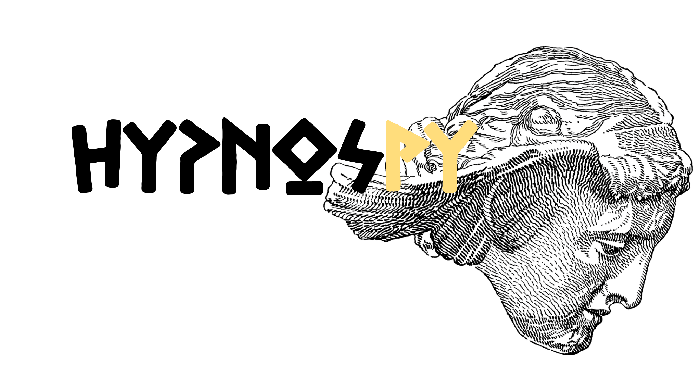
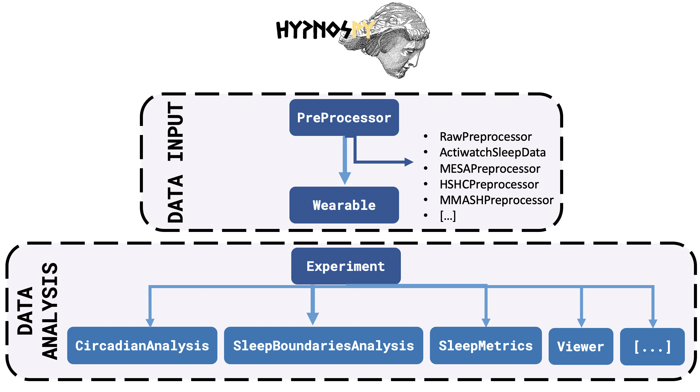

HypnosPy ⌚¶
A Device-Agnostic, Open-Source Python Software for Wearable Circadian Rhythm and Sleep Analysis and Visualization
Under the hood 🛠¶
HypnosPy is a device-agnostic, open-source Python software library for the analysis and visualization of circadian rhythms and sleep using wearable sensors. HypnosPy centralizes most well-established algorithms for the analysis of sleep and circadian rhythms and provides ease of use while supporting a wide array of devices. Augmenting the work introduced by previous packages, HypnosPy allows for the analysis of various signal inputs at different sampling rates (i.e., acceleration, actigraphy and HR in its current release) while also providing with a comprehensive set of tools that allows users to chose how to analyze these signals.
Hypnospy is implemented in Python with standard data science dependencies and uses the object-oriented paradigm. This makes Hypnospy an open-source framework that is both easy to use and to extend (please join us for this mission! :rocket:). Data inputs in HypnosPy rely only on the module called RawProcessing and its descendants. RawProcessing is used to translate the raw data captured by a wearable device (i.e., what is the input data format? A .csv file? What are the columns, if any, for the activity count or heart rate?) to Hypnospy’s Wearable module. We already provide a set of pre-defined preprocessors for different open collections commonly used in research, such as the Multi-Ethnic Study of Atherosclerosis (MESA) and the Hispanic Community Health Study (HCHS) collections from http://www.sleepdata.org, which have been increasingly used in machine learning and epidemiological studies. Nevertheless, users can easily specific their own preprocessing module using or extending the RawProcessing module.
While all data analysis in HypnosPy can be performed on one single wearable, Hypnospy provides a layer of abstraction for experiments containing multiple wearables, namely, the Experiment module. All further data analysis can be performed on a single wearable or on a set of them (using the Experiment module). With Hypnospy, it is straightforward to perform complex data analysis, such as sleep inferences, circadian analysis or non-wear detection, among many other wearable related functionalities. At the core of HypnosPy is the modularity and choice of algorithms for these different purposes. A holistic overview of the software architecture is provided in the Figure bellow:
